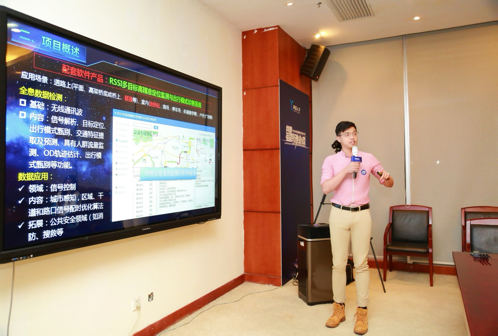
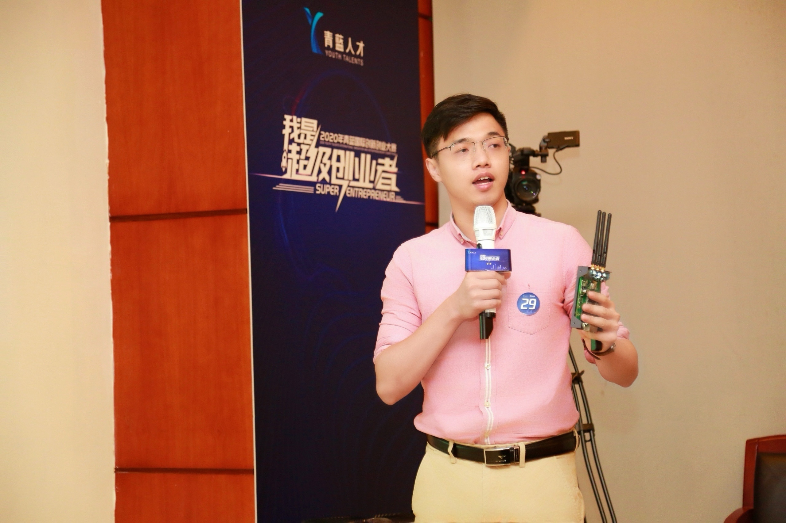
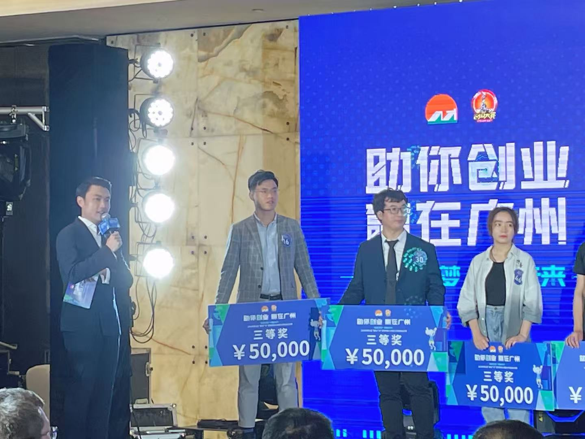
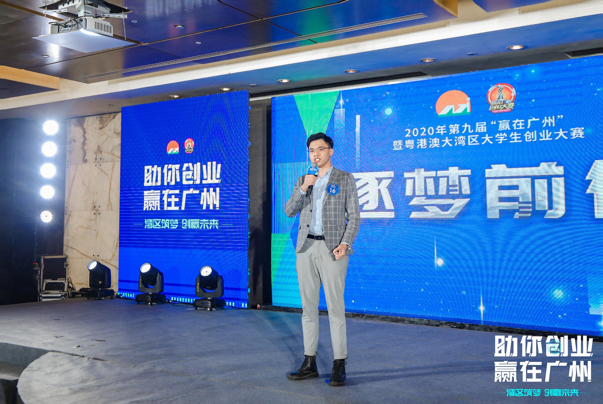
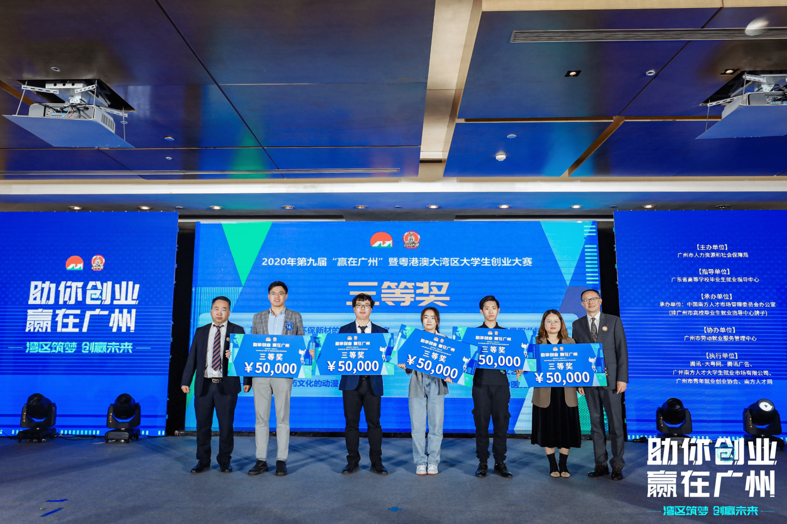
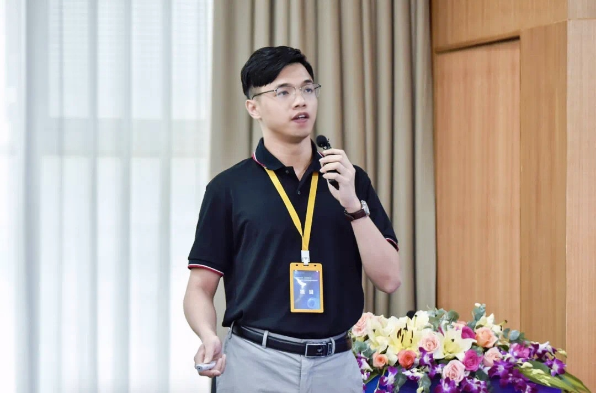

Funded Research Projects
Currently Participated Projects
- Domain-Specific Foundation Models for Safe and Intelligent Transportation
- Safe and Trustworthy Human-Centered Mobility: Leveraging Foundation Models and Digital Twins for Vulnerable Road User–Vehicle Interactions
- Towards Safe and Efficient Autonomous Driving: A Synergistic Approach with Human Expertise and Multimodal Large Language Models
- Using Connected Intelligent Transportation to Enhance Vulnerable Road User Safety: Phase II Real-World Testing and Deployment
- Tribal & Rural Autonomous Vehicles for Efficiency, Livability and Safety (TRAVELS)
Previously Led Projects
- Design of a City Traffic State Monitoring System Based on RSSI Communication Signals
- Traffic Status Perception and Monitoring Technology Based on WiFi Scanner Data
- Urban Traffic Flow Network Sensing System Based on Dedicated Short-Range Communications (DSRC)
- A Digital Twin-Based Approach for the Design and Multi-Objective Optimization of a Hollow Glass Production Line
Previously Participated Projects
- SafetyGPT: Domain-Specific Multi-Modal LLM for Transport Safety and Management
- EdgeTwin: An Edge AI-Enabled Digital Twin Framework for Intelligent Traffic Infrastructure Management and Safety
- Promoting CAV Deployment by Enhancing the Perception Phase of Autonomous Driving Using Explainable AI
- Leveraging Control Theory to Facilitate UAV Application for CAV Deployment
- Long-Distance Bus Corridor Signal Priority and Speed Guidance Coordinated Ecological Control
- Research on Key Technologies for Multi-Source Data Fusion and Hidden-Danger Perception Systems
- Research and Development of Intelligent Patrol Robot Technology and Equipment for Unattended Substations in Hazardous Environments
Entrepreneurship & Technology Transfer
Prior to my Ph.D. studies, I co-founded two technology companies in China. Through this experience, I worked with industry professionals on practical applications of research and gained experience in technology development and commercialization. The companies also engaged in discussions concerning more than 3 million RMB in potential investment with institutions including Yueke Securities and CITIC Securities.

Qinglan Project (2021)

Qinglan Project (2021)

Winning Guangdong Competition (2020)

Winning Guangdong Competition (2020)

Winning Guangdong Competition (2020)

Chuangke Guangdong Competition (2020)

Chuangke Guangdong Competition (2020)
Patents & Intellectual Property
Granted Patents
- An RSSI fitting method for tracking low-speed moving vehicles. PDF
Yongjie Lin, Zilin Huang, and Lunhui Xu. Invention patent · Application No. CN201811368105.7. - A RSSI-based method for positioning low-speed moving vehicles. PDF
Yongjie Lin, Zilin Huang, Sheng Zhao, Lunhui Xu, and Shanyu Tang. Invention patent · Application No. CN201811368103.8. - Urban traffic operation evaluation method based on ecological index. PDF
Yongjie Lin, Weijia Zeng, Yanqing Yang, Yuming Cheng, Yuheng Liu, Haixia Guan, and Zilin Huang. Invention patent · Application No. CN201911419439.7. - A device for counting the number of passengers getting on and off in a portable bus. PDF
Zilin Huang, Yongjie Lin, and Lunhui Xu. Utility model patent · Application No. CN201920581476.7. - RSSI-based road traffic jam detection and dispersion device. PDF
Zilin Huang, Yuzhuang Pian, Yongjie Lin, Pan Wu, and Yuqing Zhan. Utility model patent · Application No. CN202021751310.4. - Vehicle-mounted positioning device based on RSSI and inertial navigation. PDF
Yongjie Lin, Zilin Huang. Utility model patent · Application No. CN201920574767.3. - Micro device for positioning moving target based on RSSI. PDF
Yongjie Lin, Zilin Huang. Utility model patent · Application No. CN201920574719.4. - An obstacle avoidance system for unmanned vehicles based on machine vision and infrared sensors. PDF
Yongjie Lin, Zilin Huang, and Lunhui Xu. Utility model patent · Application No. CN202020235979.1. - Visual navigation system for assisting unmanned vehicles. PDF
Yongjie Lin, Zilin Huang, and Lunhui Xu. Utility model patent · Application No. CN202020235977.2. - A target intrusion detection device based on wireless communication signal. PDF
Yongjie Lin, Zilin Huang, and Lunhui Xu. Utility model patent · Application No. CN202020965272.6. - A RSSI-based positioning and early warning device for two-passenger and one-dangerous vehicles. PDF
Yuzhuang Pian, Zilin Huang, Yongjie Lin, Yuqing Zhan, and Pan Wu. Utility model patent · Application No. CN202021751321.2. - A kind of elevator apparatus of wheel. PDF
Chao He, Zhanqin Yu, Zequan Hong, Chengzhao Zhang, Ziping Chen, and Zilin Huang. Utility model patent · Application No. CN201620682753.X. - Tunnel vehicle accident detection and early warning device based on RSSI. PDF
Bin Rao, Zhihong Ye, Yongjie Lin, Haochuan Zhong, Yuqing Zhan, Jiajun Wu, Yuzhuang Pian, and Zilin Huang. Utility model patent · Application No. CN202120982224.2. - RSSI-based smart-city pedestrian traffic collection device.
Chao He, Han Wang, Guoqing Wu, Yuzhuang Pian, Zilin Huang, and Jianhong Chen. Utility model application · Application No. CN202021782535.6.
Pending Patent Applications
- Subway transfer bus behavior identification method, system, computer equipment and storage medium. PDF
Zilin Huang, and Lunhui Xu. Invention patent application · Application No. CN201910051795.1. - The recognition methods of Metro Passenger time getting off, system, computer equipment and storage medium. PDF
Zilin Huang, and Lunhui Xu. Invention patent application · Application No. CN201910051785.8. - A kind of hot spot junction of park and shift recognition methods based on IC card data. PDF
Zilin Huang, and Lunhui Xu. Invention patent application · Application No. CN201910339482.6. - A kind of subway station passenger flow monitoring method and system. PDF
Zilin Huang, Yongjie Lin, and Lunhui Xu. Invention patent application · Application No. CN201910338991.7. - A kind of traffic trip mode identification method based on wireless signal. PDF
Yongjie Lin, Zilin Huang. Invention patent application · Application No. CN201910581470.4.
Software Copyrights
- The Simulation System of Rapid Customization Design Platform for Hollow Glass Automatic Production Line V1.0
Kuanyuan Li, Zilin Huang, Luofang, and Chuang Zhou. Computer Software Copyright, 2017SR099863; Legal Status: Authorization. - Intelligent Workshop Rapid Customization Design Platform System V1.0
Xiaoping Li, Luo Fang, Zilin Huang, and Chuang Zhou. Computer Software Copyright, 2017SR302066; Legal Status: Authorization. - Student Organization Activity Approval System V1.0
Junxing Zhang, Ruixuan Cai, Huanzeng Yang, Zilin Huang, Poyu Zhuang, Guangzheng Zhong, and Jiahao Jiang. Computer Software Copyright, 2017SR099823; Legal Status: Authorization. - Club Activities Background Management System V1.0
Junxing Zhang, Huanzeng Yang, Poyu Zhuang, Zilin Huang, Guangzheng Zhong, and Jiahao Jiang. Computer Software Copyright, 2017SR302060; Legal Status: Authorization.